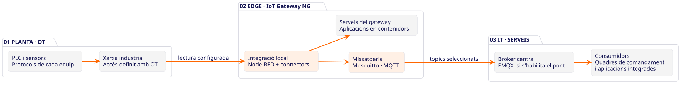
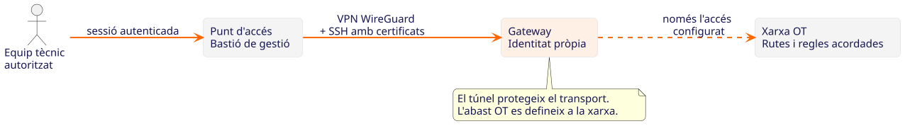
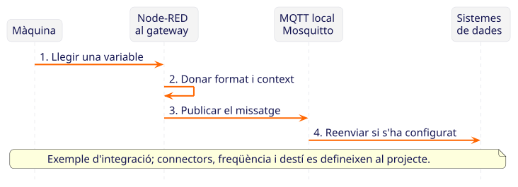
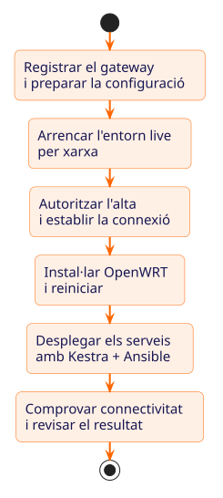
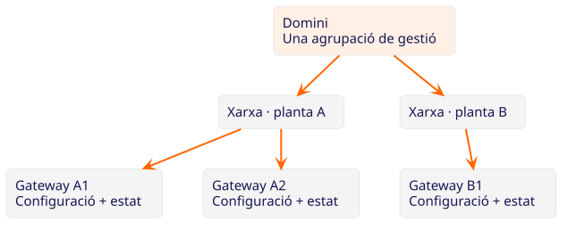

Dona context a les dades.
Integra les variables dels equips, prepara els missatges i publica’ls perquè altres aplicacions els puguin consumir.
Node-RED · MQTT · connectors del projecteINDUSTRIAL IoT · EDGE · OT / IT
De les màquines a les dades. Del primer gateway a múltiples instal·lacions. Una base comuna per integrar, desplegar i gestionar el teu entorn industrial.
Pensat per a manteniment, automatització i integradors OT.
Connectar. Processar. Gestionar.
EL PUNT DE CONNEXIÓ
IoT Gateway NG combina el programari del gateway a planta amb una plataforma de gestió central. Apropa la integració a la màquina i ajuda a mantenir una configuració coherent entre instal·lacions.
Integra les variables dels equips, prepara els missatges i publica’ls perquè altres aplicacions els puguin consumir.
Node-RED · MQTT · connectors del projectePrepara una configuració, desplega els serveis necessaris i consulta el resultat de l’execució des de la plataforma.
Instal·lació · configuració · registre de tasquesCombina accés remot amb VPN i certificats, estat de connectivitat i eines de supervisió dels serveis.
WireGuard · SSH · mètriques i logsARQUITECTURA, SENSE MISTERIS
La integració viu a prop del procés. La gestió coordina els equips. Explora els tres recorreguts per entendre què circula i per on.
Node-RED integra i transforma les dades. Mosquitto les distribueix localment per MQTT. El pont cap a EMQX és opcional i es configura segons el projecte.

Els protocols, connectors i sistemes de destí s’han de validar per a cada instal·lació. El diagrama mostra una configuració de referència.
La VPN WireGuard protegeix la connexió. Els certificats SSH permeten identificar els equips en l’accés de gestió. Les rutes i les regles de xarxa determinen l’abast de l’accés a OT.

La VPN no substitueix la segmentació de xarxa ni les polítiques de seguretat de la planta.
Un flux llegeix la variable, hi afegeix el context necessari i la publica. Els sistemes connectats poden consumir el missatge per mostrar-lo o analitzar-lo.

La retenció de dades i el comportament davant un tall de connexió depenen dels fluxos i de la configuració MQTT.
DEL BANC DE PROVES A LA PLANTA
El primer gateway defineix el patró. Els següents aprofiten la mateixa base, ajustada a les particularitats de cada xarxa i instal·lació.
Definim les dades, els equips compatibles, la xarxa i els accessos amb l’equip OT. Registrem el gateway i la seva configuració.
L’arrencada per xarxa prepara l’entorn live. Després de l’autorització, s’instal·la OpenWRT i es despleguen els serveis seleccionats.
Comprovem la connectivitat, els fluxos d’integració i el resultat del desplegament abans d’ampliar l’abast.
Consultem l’estat, revisem mètriques i logs dels serveis habilitats i apliquem configuracions als equips que correspongui.

UNA VISIÓ COMUNA
Organitza els equips en dominis, xarxes i dispositius. Una estructura compartida per saber què tens, on pertany i quina configuració necessita.
Exemple d’organització. L’aïllament efectiu depèn de les regles de xarxa i dels permisos configurats.

ON ET POT AJUDAR
Tres exemples de projectes que pots abordar sobre aquesta base. L’abast s’ajusta als equips, als protocols i a les necessitats de cada planta.
AUTOMATITZACIÓ
Integra variables de màquina i prepara-les per a un quadre de comandament o una aplicació de producció.
MANTENIMENT
Revisa la connectivitat i l’estat dels serveis per acotar una incidència abans de desplaçar-te.
INTEGRADORS
Parteix d’una configuració comuna i adapta els paràmetres de xarxa i integració de cada instal·lació.
Tecnologies obertes. Funcions concretes.
PARLEM CLAR
Les preguntes que convé resoldre amb l’equip de planta.
No. El gateway afegeix una capa d’integració i gestió. El control de la màquina i les funcions de seguretat continuen als sistemes industrials corresponents. No és un controlador de temps real ni un sistema de seguretat funcional.
Cal comprovar els protocols disponibles, els permisos de lectura i els connectors necessaris. Node-RED i les aplicacions desplegades permeten construir la integració, però no impliquen compatibilitat automàtica amb qualsevol equip.
Els serveis locals poden continuar executant-se al gateway. L’accés remot i els enviaments externs depenen de la connexió. La continuïtat de cada flux, les cues i la recuperació dels missatges s’han de dissenyar i provar en el projecte.
No necessàriament. La integració i el broker MQTT poden funcionar localment, i el pont cap a un broker central és opcional. La plataforma de gestió disposa d’un desplegament autoallotjat; la ubicació es defineix segons el projecte.
Cal seleccionar maquinari compatible amb la imatge OpenWRT del projecte i dimensionar disc, memòria i interfícies segons els serveis. També s’ha de preparar l’arrencada per xarxa, la connectivitat de gestió i la segmentació OT/IT. Ho validem al pilot.
La VPN i els certificats SSH formen part de l’accés de gestió. Cal acordar també rutes, regles de tallafoc, permisos, actualitzacions i responsabilitats operatives. L’arquitectura s’ha de revisar conjuntament amb els responsables OT i IT.
DEL DIAGRAMA A LA TEVA PLANTA
Explica’ns quines dades necessites, quins equips tens i com és la teva xarxa. Definim un primer pilot amb criteris de validació concrets.
Parlem del teu projecte